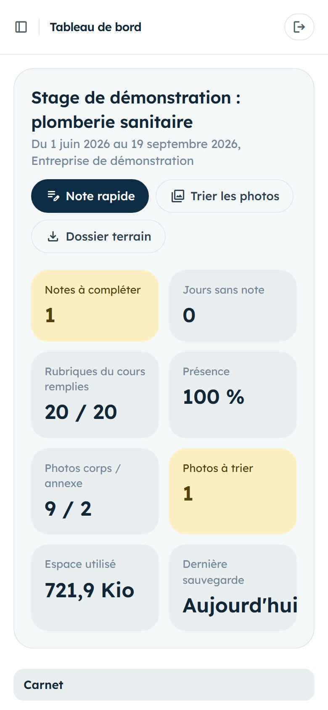
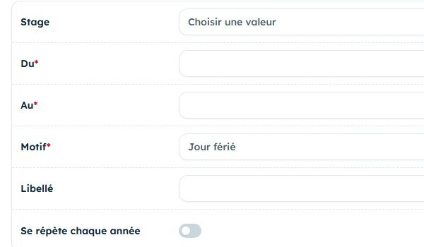
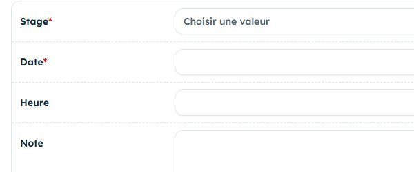
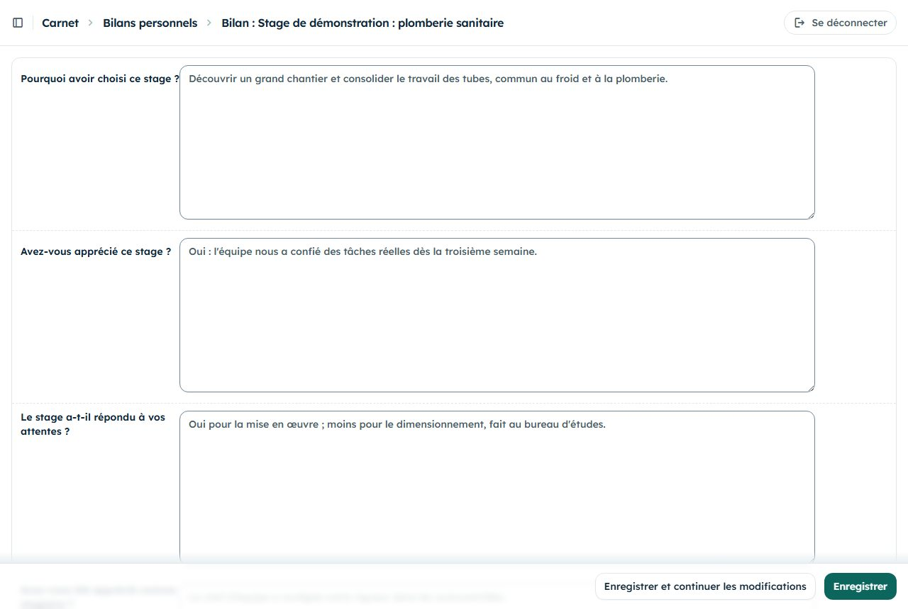

Samedi 28 novembre 2026
Vous avez un mois de notes. Avant d'en ajouter, regardez ce que donnera le rapport, faites relire votre formateur et rattrapez ce qui manque.

Jusqu'ici, vous avez recueilli. À partir d'aujourd'hui, vous regardez aussi ce qui manque et vous prenez du recul sur votre stage.
| Moment | Dans l'application | Durée |
|---|---|---|
| Vendredi soir | Télécharger le dossier terrain, ouvrir terrain.md, repérer les rubriques vides. | 15 min |
| Vendredi soir | Déclarer un samedi manqué, rattraper une note oubliée, vérifier le formateur référent. | 10 min |
| Sur place | Notes rapides comme d'habitude, plus les réponses aux rubriques vides. | 1 min par note |
| Avant de partir | Demander au tuteur un avis sur votre travail. | 5 min |
| Le soir | Lire les remarques du formateur, commencer le bilan personnel, noter critiques et suggestions. | 40 min |
terrain.md (page 2).Le dossier terrain n'est pas seulement une sauvegarde : son fichier terrain.md range déjà toutes vos saisies selon le plan du cours. C'est le brouillon de votre rapport.
terrain.mdterrain.md avec un éditeur de texte (Bloc-notes, ou une application de notes sur le téléphone).Le fichier suit le plan du cours : Partie I Entreprise, Partie II Mission, Partie III Thème, bilan, puis le journal, les tâches, les équipements, les données techniques, les personnes, les abréviations, les lieux et les photos retenues.
terrain.md après un samedi :## Partie I : Entreprise ### Présentation Entreprise de lots techniques : climatisation, plomberie, électricité. ### Historique de l'entreprise _Rien de saisi._ ### Secteur(s) d'activité _Rien de saisi._ ### Marchés de l'entreprise _Rien de saisi._
Une ligne par rubrique : son nom, puis la question à poser samedi, et à qui.
Stage, onglet Suivi, champ Formateur référent. S'il est vide, choisissez votre formateur dans la liste. S'il n'y figure pas, demandez à l'administrateur de lui créer un compte.
Sans ce réglage, votre formateur ne voit pas vos notes.
Un stage d'un jour par semaine laisse peu de marge : un samedi manqué, et le tableau de bord affiche un jour sans note. Deux cas, deux réponses.
Absences, ajouter : votre stage, les dates Du et Au (le même samedi), le motif.
Le samedi sort des jours sans note, et le taux de présence devient exact. Pour une maladie, gardez le justificatif.

Journal, ajouter : votre stage, la date du samedi concerné, puis le texte. La note rapide prendrait la date du jour ; ici, vous choisissez la date.
Écrivez ce dont vous êtes sûr. Ce que vous ne savez plus, reposez la question au tuteur samedi plutôt que de le reconstituer.

Honnêteté : une absence se déclare comme absence. Une note datée d'un samedi où vous n'étiez pas fausserait le rapport et le taux de présence.
Journal, ouvrir une note, onglet Formateur. Le formateur ne peut écrire que là ; vous lisez, puis vous corrigez la note.
Bilans personnels : répondre dès maintenant à Pourquoi avoir choisi ce stage ? et Le stage a-t-il répondu à vos attentes ? Les autres questions mûriront.
Même formulaire, champs Critiques et Suggestions : une ligne par observation de la journée. Ils nourriront la Partie IV.
Personnes : cocher À remercier pour ceux qui vous ont formé. Vérifier Nom publiable avec leur accord.

Puis rouvrez terrain.md du nouveau zip : il doit compter moins de « Rien de saisi » que vendredi.
Cinq exercices sur le compte de démonstration. Les exercices 2 et 3 modifient le compte partagé : supprimez ensuite ce que vous avez créé.
esrventisax.pythonanywhere.comdemo.apprenantdemo-local-2026À faire : télécharger le dossier terrain, ouvrir terrain.md, chercher « Rien de saisi ».
Résultat attendu : une seule occurrence, sous « Généralités sur la plomberie sanitaire » : un chapitre du thème sans aucune note. Vous savez où chercher dans le vôtre.
À faire : noter le taux de présence du tableau de bord. Absences, ajouter : stage de démonstration, du 18/07/2026 au 18/07/2026, motif Cours au CFP. Revenir au tableau de bord. Puis supprimer l'absence.
Résultat attendu : le taux de présence baisse pendant l'exercice, puis revient à 100 %.
À faire : Journal, ajouter : stage de démonstration, date 12/09/2026, texte « Note de rattrapage : exercice. ». Retrouver la note dans la liste, puis la supprimer.
Résultat attendu : la note apparaît à sa date, parmi celles de septembre.
À faire : Bilans personnels, ouvrir celui de la démonstration, lire les champs Critiques et Suggestions. Puis, dans terrain.md, trouver la section « Bilan personnel, critiques et suggestions ».
Résultat attendu : vous y retrouvez les mêmes phrases : c'est la matière de la Partie IV et de la conclusion.
À faire : Journal, ouvrir une note, onglet Formateur.
Résultat attendu : le champ Remarque du formateur est en lecture seule pour vous : c'est là que votre formateur vous répondra.
La Partie IV du rapport demande des critiques et des suggestions. Le jury attend un constat précis et une proposition faisable, pas un reproche.
« L'organisation est nulle, on attend tout le temps le matériel. »
« Deux samedis de suite, les raccords sont arrivés après le début des travaux. Suggestion : vérifier la liste du matériel le vendredi avec le magasinier. »
Pour chaque phrase, écrivez un constat précis, puis une suggestion. Inventez les détails pour vous entraîner.
« Les consignes de sécurité, personne ne les respecte. »
« On ne m'explique jamais rien. »
« Les plans sont toujours faux. »
terrain.md et y repérer les rubriques vides.